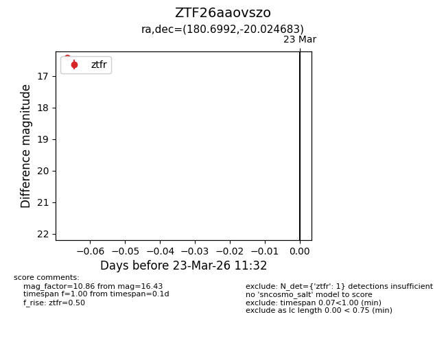
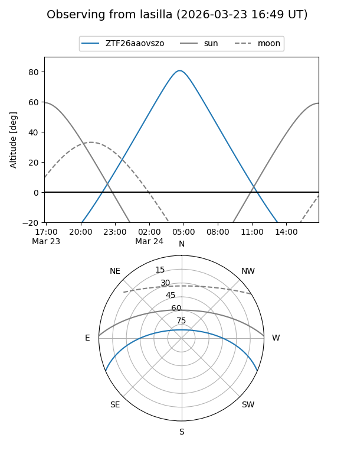
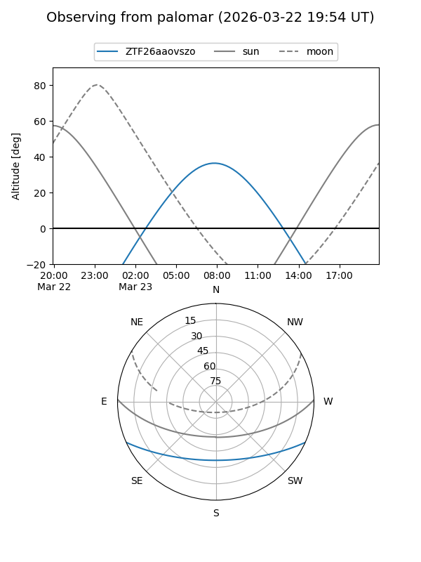

ZTF26aaovszo
Target ZTF26aaovszo at 2026-03-23 11:34
Aliases and brokers:
FINK: link
Lasair: link
ALeRCE: link
alt names
ZTF26aaovszo (ztf,fink_ztf)
Coordinates:
equatorial (ra, dec) = 180.6992,-20.02468
equatorial (HMS+DMS) = 12:02:47.80,-20:01:28.86
galactic (l, b) = (287.6342,+41.39768)
Flags:
Photometry:
last ztfr=16.43
1 ztfr detections
Lightcurve

Visibility


Additional plots